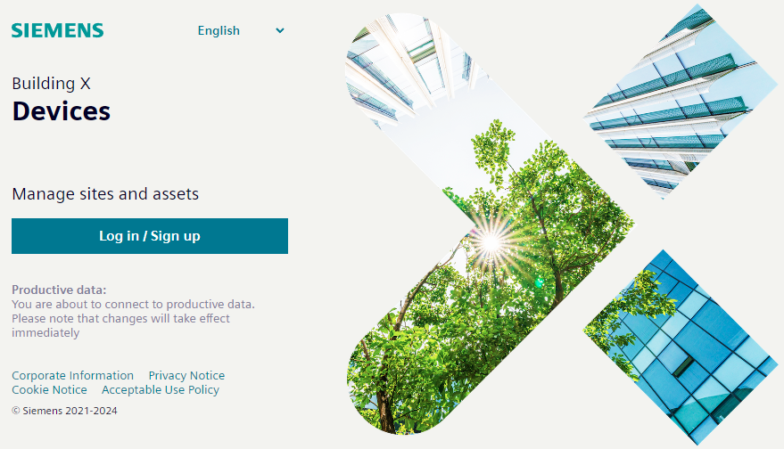
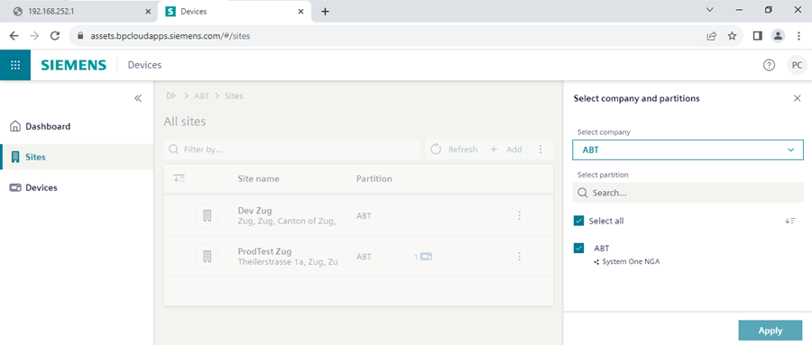
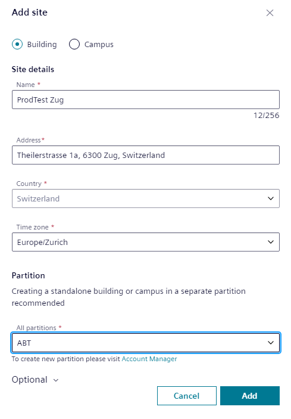

在云端载入设备
Log-in to Building X
- A Building X – Desigo Engineering Access Tool license is required.
- Select https://assets.bpcloudapps.siemens.com/.
- The Devices application log-in page opens.

- Select Log in / Sign up.
- Enter the log-in data.
- (Optional) Select the correct company from User name settings.
- Select Sites and enter the data for the site.
Note: If the site does not yet exist, the cloud administrator may need to create a partition first. This may be handled differently from country to country.
- Select Add.

- Select Add.
- The site is created.
Adding activation key
- The device activation key from the customer is available.
- In Building X select Launchpad > Devices .
- Select Sites .
- Select the site you want to add your device.
- Select Add.
- The device is created in the Cloud.
- Enter the Activation key. This must be the same activation key as in the Excel table for this device.
- Select Validate.
- Enter the Custom name of the device. This must be the same device name as in the Excel table.
- Enter the Custom description of the device. This must be the same device description as in the Excel table.
- (Optional) Confirm the External identifier of the device.
- Select Add.
- The device is on-boarded.